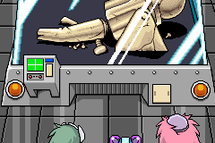

Bomberman Jetters - Densetsu no Bomberman (Japan)
Stateless / Passcode Debug Menu Patch 💾 MultiBoot 🎮 4P Link
Cartridge Identity
- Game Code
AJZJ(FamilyAJZ)- Header Title
BOM_JET.JPN- Maker / Revision
18/ rev0- ROM Size
- 8.0 MiB (8,388,608 B)
- Save Media
None / Unknown- SHA-256
8627870dbe38e1fbc732ae9e07005000790687a766311e49a09d07cdf1734b5f- Engine / SDK Group
comm-003(128 families)
Screenshots

Debug Menu Re-Enablement Patch (.ips)
Download AJZJ-debug.ips (15 B IPS / 2 B delta)
- Hook Mechanism
thumb_imm_scene_override· Patch Hudson scene dispatcher at 0x0800039a (ldr r0,[r4] -> movs r0,#90) to select scene 0x5a (TEST SELECT debug menu)- IPS SHA-256
bc2d8221f1873e26c226fc70bf36681c62c4489c235bde3b703ee237b1b6ef1d
gbakit patch apply AJZJ-debug.ips original.gba patched-debug.gbaLink Cable & Multiplayer Communications
This title contains detected communication capabilities: 💾 MultiBoot 🎮 4P Link.
Detailed protocol specifications, SIO registers, Joybus commands, and MultiBoot sequences are documented in the Link & Multiplayer Reference.
- Multi-Player SIO (4P)
- 16-bit ring network · SIOCNT (
0x04000128) literals:0x00141c,0x001698,0x0018bc· SIODATA32/SIOMULTI0 (0x04000120) literals:0x001438,0x0018c0,0x0019e4 - Single-Cart MultiBoot
- Single-Cartridge MultiBoot (Download Play) client/server handler · Thumb SWI 0x25 (
0xDF25):0x055f8e,0x1092bc,0x1b0d10,0x21094e
Cartridge Storage Architecture: Stateless / Passcode
Zero non-volatile battery hardware: This cartridge PCB contains ROM only (no SRAM, Flash, or EEPROM chips). Progression is preserved via on-screen passcodes or session-only gameplay. No
.sav file is generated or required.
ROM Assets, Compression & Audio
- BIOS Compression
- LZ77 (
0x10): 799 streams · RLE (0x30): 0 streams - ROM Pointer Tables
- 402 tables (53 pointing to validated compressed streams)
- SDK Backup Tags
SRAM_V112
Text, Fonts & Scene Data
- Primary Text Encoding
- 16-bit / UTF-16LE text (
6ASCII strings) - Font & VWF Indicators
- VWF Width Table 1bpp Font · BIOS SWIs: BitUnPack
0x10:54· LZ770x11/12:73· Huffman0x13:27· RLE0x14/15:20 - Scene & Packaging
84ROM pointer tables (≥32 entries,8≥200) ·28relativeu32TOCs ·156OAM metasprite hits
Hardware MMIO Subsystems
ppu_display0x80049bc